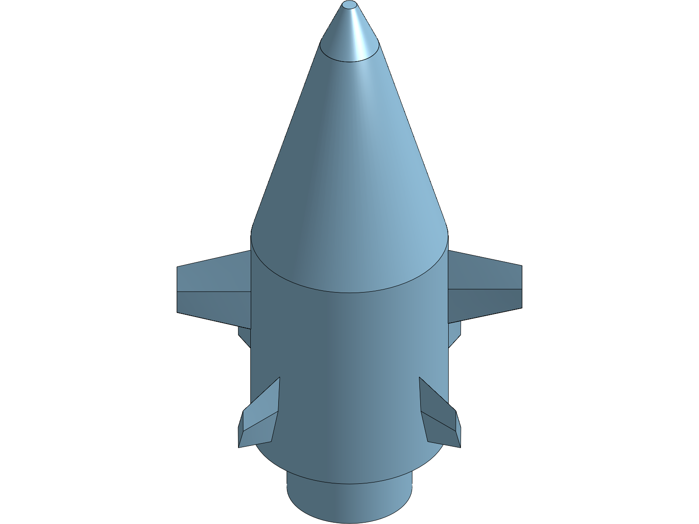

The recent wave of 3D generative AI models focuses almost exclusively on neural radiance fields (NeRFs), Gaussian splatting, or polygon surface meshes. While these representations are effective for video games, visual effects, and digital rendering, they are functionally unusable in real-world mechanical and aerospace engineering.
A physical CNC mill, lathe, or waterjet cutter does not accept an unstructured polygon mesh. Manufacturing requires precise Boundary Representation (B-Rep) geometry: mathematical NURBS surfaces, exact analytic cylinders, chamfers, datum planes, and editable parametric feature trees with strict dimensional tolerances.
1. Why Polygon Meshes Fail Physical Engineering
When a machine shop or aerospace foundry manufactures an assembly, they require parametric solids:
- Topological Awareness: In a B-Rep model, a hole is recognized as an analytic cylinder with an axis and radius. In an STL or OBJ polygon mesh, it is an approximation composed of hundreds of planar triangular facets. You cannot apply a drill-tap cycle or tolerance callout (e.g. ISO 2768-m) to a faceted triangle cloud.
- Downstream Editability: If a structural FEA test reveals a stress concentration at a fillet, an engineer needs to modify the fillet radius parameter from 2.0 mm to 3.5 mm. In an exported mesh, the entire geometry must be manually re-sculpted.
- Mating and Assembly Constraints: Real mechanisms require concentric, planar, and tangent mate definitions between components. Meshes have no concept of mated reference frames.

2. Architecture of onshape-mcp
To bridge language models with physical CAD engineering, we designed onshape-mcp, a Model Context Protocol (MCP) server connecting LLMs to the Onshape cloud CAD API.
Instead of asking the model to hallucinate 3D coordinates in a void, onshape-mcp exposes a structured API with strict validation primitives:
- Feature Tree Inspection: Queries the live PartStudio feature tree, returning feature IDs, types (Extrude, Revolve, Sweep, Fillet), parameters, and rollback states.
- Topological Constraint Enforcement: Verifies that sketch entities reference valid datum planes, circular edges, or project geometries before issuing API mutation payloads.
- Programmatic Solid Generation: Generates FeatureScript snippets and REST calls that build clean, editable CAD trees.
3. Automated Design Iteration in Practice
In autonomous flight hardware development, aerodynamic lofts and internal packaging constantly conflict. For example, during centerbody bay sizing, battery pack volumes and carbon spar clearances must be balanced against aerodynamic profile thickness.
With programmatic B-Rep control:
- The optimizer writes updated spanwise station coordinates into the CAD server via REST.
- The CAD kernel recomputes the loft, resolves fillets, checks for zero-thickness wall violations, and measures volume and mass properties.
- If a fillet fails or an extrusion intersects a clearance envelope, the error is returned to the optimizer as a hard geometric constraint violation.
4. Conclusion
The future of AI in mechanical engineering will not be built on text-to-mesh generators. It will be built on robust API integrations with native parametric B-Rep kernels where software agents construct, inspect, and verify exact manufacturing geometry.